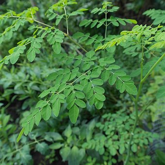

Ginger is a tropical perennial herb belonging to the Zingiberaceae family. It is native to Southeast Asia but is now cultivated in many parts of the world.
Ginger contains bioactive compounds such as gingerol, shogaol, and zingerone, which contribute to its medicinal properties. These properties make ginger a versatile herb with numerous health benefits.
Uses:
Ginger has long been used to alleviate digestive issues such as nausea, indigestion, and bloating.
It stimulates the production of digestive enzymes, promotes gastric motility, and helps to relieve gastrointestinal discomfort.
Moringa (Moringa oleifera)

Moringa, scientifically known as Moringa oleifera, is a fast-growing, drought-resistant tree native to the Indian subcontinent but now cultivated in many tropical and subtropical regions around the world.
Uses:
Moringa leaves, seeds, and other parts of the plant are rich in antioxidants, including flavonoids, phenolic acids, and vitamin C.
These antioxidants help neutralize free radicals in the body and reduce oxidative stress, thereby protecting cells from damage and lowering the risk of chronic diseases such as heart disease, cancer, and diabetes.